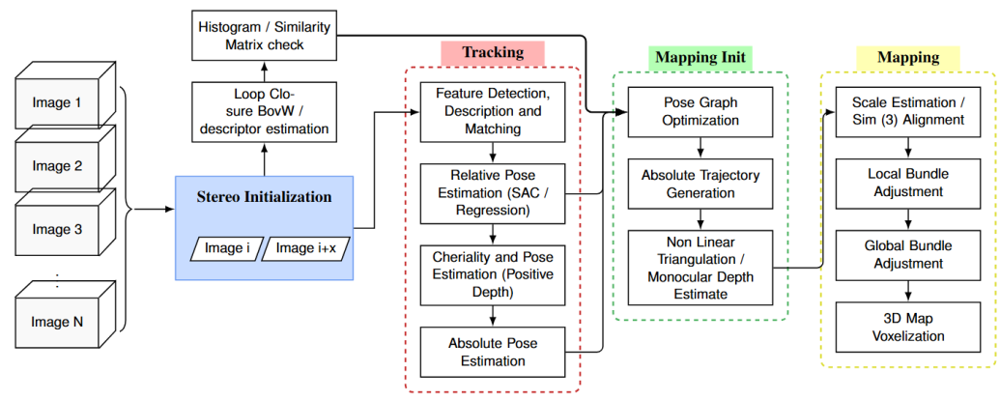
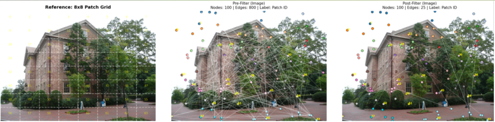
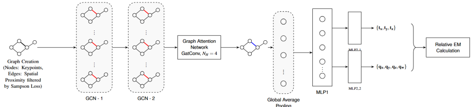
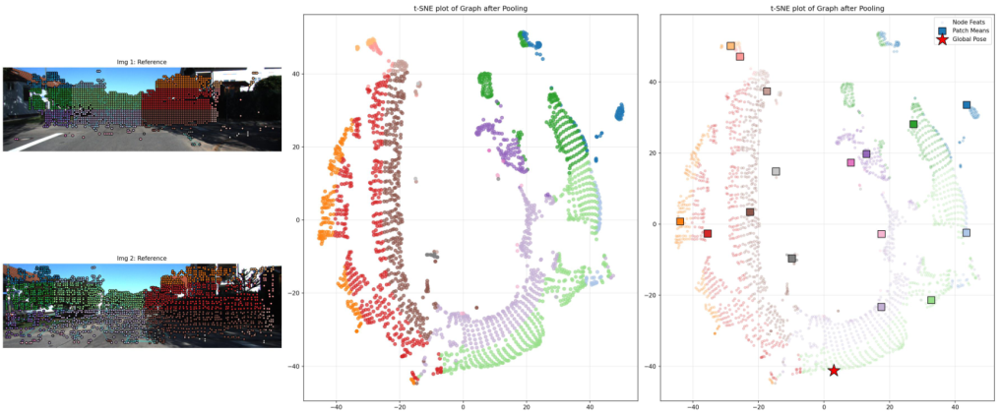
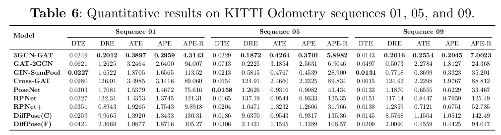
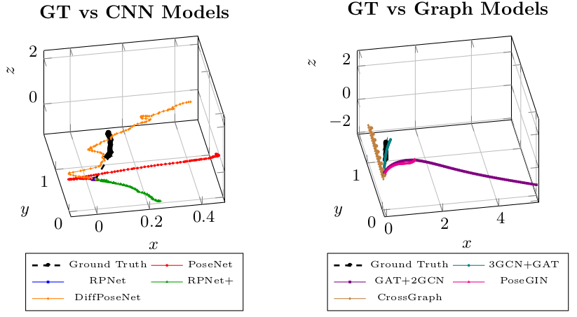

Visual perception serves as a primary mechanism through which both biological and artificial systems perceive, navigate, and interact with their environments. For artificial systems, vision provides a rich source of information that enables complex tasks such as localization, mapping, and scene understanding to be performed. The objective of vision-based perception is 3-D reconstruction, with which spatial structure from 2-dimensional (2-D) image observations can be recovered. Frameworks such as SLAM and SfM address the objective of making accurate 3-D reconstruction by jointly estimating camera motion and reconstructing the surrounding environment from image sequences.

At the core of both SLAM and SfM lies the estimation of the camera’s 6 Degrees of Freedom (6-DoF) pose, which encodes its position and orientation relative to the world coordinate frame. Despite the advantages, vision-based localization remains challenging. Appearance variations, illumination changes, occlusions, texture-poor regions, dynamic objects, and camera motion instability all contribute to the difficulty of establishing reliable correspondences between images. Furthermore, practical systems must operate under computational and latency constraints, limiting the complexity of permissible algorithms.
The process of Epipolar Graph Construction is as follows:
For a sequence of $M$ images, $M-1$ image pairs generate a tensor of size $(M-1, N, 6)$.

Final Graph Representation: The resulting graph consists of a reduced set of nodes corresponding to epipolar-consistent matched keypoints $\mathbf{F}' \in \mathbb{R}^{N' \times 6}$ and a sparsified edge set. This graph is subsequently passed to graph-based learning architectures for feature aggregation and selection of regions that satisfy epipolar geometry, enabling robust relative pose regression.

When the matched and normalized keypoints, represented by patch region colors as shown in the plots, are passed through the GNN regression module, the layers of the GNN architecture cluster the keypoints before pooling them into a higher-dimensional feature vector that influences pose estimation.

Comparative analysis of pose regression modules with the developed GNN module:


If you find this work useful for your research, please consider citing it once published: